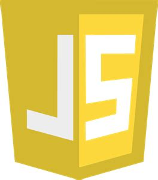
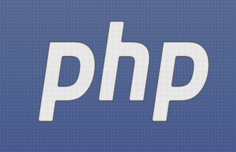
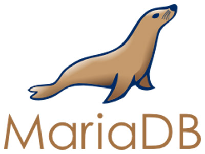

1.2. Caja de herramientas para desarrollar de aplicaciones web con PHP
- 1.2.1. HTML
- 1.2.3. CSS
- 1.2.4. Javascript
- 1.2.5. PHP
- 1.2.6. MariaDB o MySQL
- 1.2.7. Montaje del servidor
Para desarrollar apliaciones web necesitamos una caja de herramientas bastante completa. Algunas herramientas son fundamentales y genéricas, como el martillo o el destornillador. Otras, en cambio, son optativas y más específicas, y dependerán del trabajo que vayamos a realizar y de nuestras propias preferencias como desarrolladores.
En esta sección vamos a hacer un repaso de las herramientas fundamentales (el martillo y el destornillador) que necesitaremos para sacar adelante este módulo. Algunas ya las conoces y otras las aprenderemos a manejar enseguida. En los siguientes temas nos dedicaremos a las herramientas más específicas y avanzadas.
Nuestras herramientas fundamentales son estas:
- HTML, CSS y Javascript (y un navegador web)
- PHP (en un servidor web con soporte para este lenguaje)
- MySQL / MariaDB (y el correspondiente servidor de bases de datos)
1.2.1. HTML

HTML, como ya sabrás, significa “HyperText Markup Language” (Lenguaje de Etiquetas de Hipertexto), y no es un lenguaje de programación, sino un lenguaje para estructurar documentos de hipertexto.
A lo largo de este curso supondremos que ya estás familiarizado con HTML. Tampoco es que necesites un nivel profesional para entenderlo todo, pero conocerlo con cierta profundidad te ayudará. Y, desde luego, si no conoces HTML en absoluto, no comprenderás nada de lo que ocurra a partir de ahora. Por lo tanto, si has olvidado todo el HTML que aprendiste, es mejor que pares aquí y lo repases un poco antes de continuar.
Recuerda que HTML NO es un lenguaje de programación: no permite programar algoritmos. Pero sí permite incrustar otros lenguajes de programación en su interior, como enseguida veremos. Esos trozos de código incrustados dentro de HTML se denominan scripts.
Brevísima historia de HTML
- En 1991 se crea HTML (procedente de un lenguaje anterior, SGML) junto con la World Wide Web, para formatear los documentos de la www. Aquella primera versión apenas tenía 20 tags.
- Se amplía en sucesivas versiones hasta la 3.0, que no consiguió éxito debido a las limitaciones de los navegadores de la época.
- Comienza la guerra de navegadores: Microsoft y Netscape sacan sus propios “dialectos” de HTML y destrozan en estándar.
- A partir de HTML 4, los navegadores intentan unir las características de los dos, pero el resultado es demasiado confuso y complejo. Se introduce CSS.
- En 1999 aparece HTML 4.1, que fue el estándar dominante durante muchos años.
- En 2000 se define el estándar XHTML, la versión XML de HTML, mucho mejor estructurado y con menos añadidos pero igual de potente. Fracasa porque es demasiado estricto.
- En 2014 HTML5 se convierte en el estándar de facto.
- En la actualidad, HTML ya no lanza nuevas versiones, sino que se actualiza continuamente (living standard).
1.2.3. CSS

CSS significa “Cascade Style Sheet” (Hojas de estilo en cascada).
CSS, como sin duda ya sabes, es un lenguaje para la definición de los formatos utilizados en una página web. Sólo permite definir el formato (es decir, el aspecto: colores, tipografías, disposición de los elementos…) de la página, no su contenido.
Al definir los formatos en otra parte, se pueden reutilizar a lo largo de una o incluso de varias páginas: si cambiamos la definición CSS del formato, se cambian automáticamente los formatos de todas las páginas que usen esa definición.
El objetivo último de CSS es separar completamente el formato de la página de su contenido.
CSS1 apareció ya en 1996. CSS2 se usó con HTML 4 durante años. CSS3 llegó HTML5.
En la actualidad, CSS es un living standard, como HTML, es decir, no se sacan nuevas versiones sino que se actualiza continuamente. Todos los navegadores van incorporando esas revisiones en sus propias actualizaciones.
CSS está soportado universalmente, aunque los diferentes navegadores pueden interpretar de forma ligeramente distinta algunas definiciones CSS.
Como ocurre con HTML, si tienes un poco oxidado tu CSS sería conveniente que lo repasaras antes de continuar. Tampoco es necesario que seas un experto/a en CSS: con que comprendas su sintaxis básica es suficiente. El resto puedes consultarlo conforme lo necesites e irás mejorando con el tiempo y la experiencia.
1.2.4. Javascript

JavaScript es un lenguaje interpretado que puede ser incrustado dentro del código HTML de una página web.
El código JavaScript puede interactuar y modificar cualquier parte del documento HTML, por lo que dota a las páginas web de dinamismo e interactividad.
JavaScript no es Java, por mucho que su nombre se parezca. También su sintaxis puede recordar un poco a Java en algunas ocasiones. Pero déjame que te lo repita de nuevo: Javascript no es Java. Se parecen tanto como un euro y un yen japonés. Las dos son monedas de curso legal, pero ahí terminan sus semejanzas.
La implementación de JavaScript de cada navegador es distinta, obteniéndose resultados que no siempre son iguales, por desgracia para los desarrolladores. Por ejemplo, el motor Javascript de Chrome se llama V8, mientras que el de Firefox es Rhino y el de Safari y Microsoft Edge es WebKit.
Nuevamente, si no sabes nada de Javascript, debes detenerte aquí y aprender los fundamentos antes de continuar, o te perderás una parte importante de lo que sigue. Y, nuevamente, no es necesario que te conviertas en un fuera de serie del lenguaje. De momento, basta con que lo comprendas y hayas hecho unas cuantas prácticas con él. Irás mejorando con la experiencia.
Javascript nació en 1995 como un pequeño intérprete incrustado dentro del navegador Netscape para conseguir cierta interactividad en las webs, que hasta entonces eran totalmente estáticas. En 1997 se estandarizó como ECMAScript (ES1). Fue evolucionando con altibajos hasta llegar a la ECMAScript 6 (ES6) del año 2015, que supuso una auténtica revolución y convirtió a Javascript en el monstruo todoterreno que es hoy.
Desde entonces, se saca una nueva versión del estándar cada año (ES2016, ES2017, etc) con mejoras sucesivas.
Por último, ten en cuenta que son muy pocos los desarrollos que, en la actualidad, se hacen directamente con Javascript en el lado del cliente. Lo más habitual es utilizar librerías más o menos simples, o enormes frameworks, que ocultan el Javascript que existe debajo. Algunas de las librerías más populares son: jQuery (ya anticuada), Angular, Vue.js, React o Svelte.
1.2.5. PHP

PHP es un acrónimo recursivo. Significa “PHP Hypertext Preprocessor”.
Sí, así es el sentido del humor de los informáticos. Qué le vamos a hacer.
PHP es un lenguaje de programación de propósito general. De hecho, junto con librerías como PHP-Qt o PHP-GTK, puedes programar con él cualquier aplicación de escritorio con sus ventanitas, sus botoncitos y toda la parafernalia.
Pero, por circunstancias más debidas al azar que a otra cosa, se empezó a usar para desarrollo web al comienzo de la web 2.0, y hoy en día se utiliza casi exclusivamente para ese propósito. Que es el propósito que a nosotros nos interesa, claro.
Cuando se usa en desarrollo web, PHP aparece embebido dentro de documentos HTML. Enseguida veremos cómo se hace eso.
Igual que sucedía con Javascript, pocos proyectos nuevos se desarrollan con PHP clásico. Lo normal es usar un framework (o colección compleja de librerías) que ocultan en todo o en parte el funcionamiento de PHP, que sigue corriendo debajo. Por supuesto, cualquier desarrollador/a web debe conocer tanto PHP como el funcionamiento de los frameworks que corren sobre PHP.
Nosotros nos centraremos primero en PHP clásico, y más adelante veremos los frameworks para PHP, centrándonos en uno de los más populares y potentes que existen en la actualidad: Laravel.
Características de PHP
- PHP permite conectarse con múltiples bases de datos: MySQL, MariaDB, Oracle, PostgreSQL, SQL Server, DB2, etc. También puede conectar por ODBC.
- Es un lenguaje multiparadigma (procedimental, orientado a objetos y, en menor medida, funcional). Se parece mucho a otros lenguajes de tercera generación y orientados a objeto (en particular a C/C++ y, por tanto, a Java). Su curva de aprendizaje para los que ya saben programar es muy plana.
- Es un lenguaje con tipado dinámico y débil. Es decir, los tipos de datos se asignan en tiempo de ejecución y pueden mezclarse tipos de datos con bastante libertad. Esto tiene ventajas e inconvenientes que descubrirás en tus carnes cuando empieces a programar con PHP.
- Es un lenguaje tremendamente flexible. Casi todo se puede hacer de tres o cuatro formas diferentes. Eso le permite adaptarse a los gustos personales de cada programador/a.
Brevísima historia de PHP
- Surge en 1994 como un proyecto personal de su creador, Rasmus Lerdorf, para automatizar ciertas tareas de su web personal.
- PHP3 (1998), con un motor totalmente reescrito, tuvo un gran éxito comercial.
- PHP4 (2000) supuso la eclosión de PHP como lenguaje del lado del servidor. Muchos scripts en PHP que circulan por la red están escritos en esta versión obsoleta, así que debes aprender a reconocerla para evitarla.
- PHP5 (2004) tiene soporte para orientación a objetos y una biblioteca de clases bastante bien diseñada. Por lo tanto, desde esta versión PHP pasa de ser un lenguaje estructurado (3GL) a ser un lenguaje orientado a objetos. PHP5 dominó el mercado durante una década.
- PHP6 empezó a desarrollarse en 2007 y se canceló en 2014.
- PHP7 (2015) supuso una gran mejora en el rendimiento e introdujo otras novedades, como el tipado (opcional). Se considera un renacimiento del lenguaje y aún es la versión dominante en muchos sitios web.
- PHP8 es la última versión (8.4.11 cuando escribo esto, en septiembre de 2025). Con mejoras y mantenimiento continuo, PHP sigue siendo un lenguaje muy vivo (aunque llevan 20 años anunciando su muerte). PHP7 ya no tiene soporte y todas los nuevos desarrollos con este lenguaje deberían escribirse en PHP8.
Lo nuevo en PHP8
Algunas de las novedades más destacables de PHP8 son:
- Mejoras importantes de rendimiento, con la aparición de JIT (Just in Time Compiler), un compilador de PHP que trabaja de forma transparente al programador para incrementar la velocidad de ejecución.
- Mejoras menores en el manejo de las clases y métodos abstractos.
- Simplificación en la declaración de atributos.
- Posibilidad de usar arrays con índices negativos.
- Aparición de los Attributes (similar a los decoradores) que permiten modificar el comportamiento de una clase sin alterar su código.
Como ves, nada que vaya a revolucionar la forma de trabajar con PHP, solo mejoras continuas para evitar que PHP quede rezagado con respecto de otros lenguajes más modernos.
Ventajas de PHP sobre otros lenguajes
PHP es uno de los lenguajes más utilizados para el desarrollo de aplicaciones web del lado del servidor. Hace años (¡muchos!) que algunos se empeñan en decir que está muerto o que está destinado a desaparecer, pero sigue ahí, obstinadamente entre los lenguajes más populares.
Por algo será.
Algunas de las ventajas que han hecho de PHP durar tanto tiempo son:
- Es un lenguaje en continua evolución que se ha adaptado a los nuevos tiempos.
- Es un lenguaje libre y abierto.
- Es muy eficiente (comparado con otros lenguajes del lado del servidor).
- Es ejecutable en (casi) cualquier servidor.
- Cuenta con una excelente documentación y miles de foros y sitios donde consultar dudas.
- La curva de aprendizaje es baja si ya sabes programar.
- Existen mogollón de entornos de desarrollo para PHP, para todos los gustos.
- Ofrece fácil interoperatibilidad con otros sistemas, en particular con bases de datos.
- Comunidad muuuy grande.
- Su sintaxis, estabilidad y seguridad han mejorado enormemente desde los tiempos algo caóticos de PHP4.
Inconvenientes de PHP con respecto a otros lenguajes
PHP también presenta algunos inconvenientes, por supuesto. No hay nada perfecto. Entre ellos, podemos destacar:
- Fallos de diseño (corregidos en su mayoría a partir de PHP5), como:
- Los métodos para acceso a bases de datos cambian según el SGBD usado.
- Nombres de funciones inconsistentes.
- No es completamente orientado a objetos.
- Tipado confuso y, a veces, impredecible.
- Grandes (e incompatibles) cambios entre versiones.
- Pérdida lenta pero constante de cuota de mercado.
- Pésima relación señal/ruido en la web: ¡hay demasiados malos desarrolladores en PHP!
Gestión de dependencias con composer
Aunque PHP puede instalarse como un programa independiente, en el contexto del desarrollo de aplicaciones web siempre se utiliza como parte de un servidor web.
Casi todos los servidores web proporcionan soporte nativo para PHP. Por ejemplo, Apache lo incorpora “de serie”, de modo que solo tenemos que tener un servidor con Apache instalado para poder desarrollar con PHP. Lo mismo puede decirse de otros servidores basados en sistemas Unix y Linux, como nginx o lighttpd.
Cuando las aplicaciones se empiezan a hacer complejas, suele ser habitual que necesitemos paquetes de PHP que no son estándar, es decir, que no vienen con el lenguaje. Podemos instalarlos manualmente, desde luego, pero PHP, como todos los lenguajes medianamente serios, tiene su propio gestor de dependencias llamado composer.
composer se usa desde la línea de comandos y trabaja utilizando un archivo de configuración llamado composer.json (porque está escrito en formato JSON) donde se especifican qué paquetes (o librerías) usa el proyecto en cuestión. Al ejecutar composer, ese archivo es leído y las dependencias instaladas o actualizadas en una carpeta del proyecto llamada /vendor. De ese modo, podemos tener todas las librerías correctamente instaladas y actualidadas con facilidad.
El aspecto del archivo de configuración composer.json es algo así:
{
"require": {
"monolog/monolog": "2.0.*",
"phpunit/phpunit": "^9.5",
"phpunit/php-code-coverage": "^9.2"
}
}
Con la clave require le estamos indicando a composer que los paquetes siguientes son imprescindibles para nuestro programa y que tiene que instalarlos en /vendor junto con todas sus dependencias (si las tuvieran), es decir, junto con cualquier otra librería que esos paquetes necesiten para funcionar.
El nombre de cada paquete está formado por el nombre del fabricante seguido del nombre del proyecto en cuestión. A menudo, ambos nombres son iguales (como en “monolog/monolog”), pero a veces no es así (“php-unit/php-code-coverage”).
A continuación del nombre se indica la versión del paquete que necesitamos. Se pueden usar símbolos comodín. Así, por ejemplo, “2.0.*” significa “2.0.” seguido de cualquier otro número, mientras que “^9.5” significa “versión 9.5 o superior”.
Existen otras secciones que se pueden añadir al archivo composer.json, como:
- require-dev: paquetes necesarios solo en el entorno de desarrollo (no en el de producción).
- autoload: paquetes que deben cargarse automáticamente en memoria durante la ejecución de la aplicación, de manera que no sea necesario incluirlos con include o require.
- conflict: paquetes que no funcionan bien con tu aplicación y que no deben ser instalados en ningún caso.
La configuración de composer tiene muchos recovecos y se puede convertir en algo bastante complicado. No es nuestra intención dar ahora un curso sobre composer. Solo tienes que saber cómo añadir las librerías necesarias para tu aplicación (con require) y cómo lanzar su instalación y actualización.
Para instalar los paquetes que necesita tu aplicación, solo tienes que teclear este comando (en el directorio raíz de tu aplicación, donde ya debe existir composer.json):
$ composer install
También se puede instalar un paquete suelto, sin necesidad de añadirlo a composer.json:
$ composer install nombre-del-paquete
Si lo que quieres es actualizar los paquetes de composer.json a la última versión disponible, teclea esto:
$ composer update
Por último, si quieres lanzar la autocarga de paquetes (los que hayas puesto en la sección “autoload”), teclea:
$ composer dump-autoload
Desde luego, composer tiene otras muchas opciones que no vamos a ver en este momento. Este es el uso básico de este gestor de dependencias, e irás aprendiendo otras cosas sobre él conforme lo necesites.
1.2.6. MariaDB o MySQL

Otra de las herramientas básicas de nuestra caja de herramientas es el gestor de bases de datos relacionales (SGBD).
MariaDB es el SGBD líder del mercado de las aplicaciones web. Nos permitirá conectarnos a una base de datos en red y ejecutar sentencias SQL de forma remota al visitar una aplicación web. Es un fork de MySQL, por lo que, en la práctica, se puede usar cualquiera de ellos indistintamente.
Existen otras posibilidades, desde luego. Entre las más populares están:
- SQL Server
- Oracle
- PostgreSQL
- SQLite
También está la posibilidad de usar base de datos no relacionales, como MongoDB, Cassandra o Redis. PHP puede conectarse también a estos sistemas, pero la forma de trabajar es diferente que con bases de datos relacionales. Como estas últimas son, de lejos, las predominantes en el mercado, nos centraremos en ellas.
A partir de ahora, cuando hablemos de bases de datos, siempre nos estaremos refiriendo a MariaDB o MySQL, pero cualquier otra base de datos relacional puede usarse del mismo modo con mínimos cambios en el código fuente.
Características de MariaDB
- MariaDB es un gestor de bases de datos relacional multiusuario y multiplataforma.
- Permite mútiples conexiones remotas.
- Es software libre.
- Existen librerías para acceder a MariaDB desde muchos lenguajes: C/C++, Java, PHP, Perl, Pascal… Además, hay drivers ODBC.
- Está muy extendida en aplicaciones web, generalmente en combinación con PHP.
- Cuenta un interfaz gráfico programado en PHP, llamado PHPMyAdmin, que se ejecuta en el navegador web. Por supuesto, se puede usar cualquier otro cliente compatible con MySQL, como MySQL Workbench.
Brevísima historia de MariaDB
- MySQL surgió como un proyecto OpenSource en Suecia en 1995.
- El objetivo era lograr un SGBD rápido y fiable que cumpliera con el estándar SQL.
- Las primeras versiones (que se denominaron mSQL) eran muy ineficientes.
- La popularización de PHP y su ganancia en eficiencia a partir de la versión 3 la han hecho muy popular en la actualidad.
- Tras su adquisición por Oracle, se intentó relegar al segmento medio-bajo en el mercado de los SGBD y surgió un fork: MariaDB (traducción para los recién llegados: “fork” significa “proyecto nuevo surgido a partir de otro proyecto ya existente”).
- La versión más reciente (cuando escribo esto, en septiembre de 2025) es MariaDB 11.8.2
1.2.7. Montaje del servidor
Para que todas las herramientas anteriores funcionen y, por lo tanto, para que podamos desarrollar una aplicación web completa, necesitamos dos componentes software adicionales:
-
Un cliente web, también llamado navegador web. En este programa se ejecutan todas las tecnologías del lado del cliente (HTML, CSS y Javascript). Puedes usar el que más te guste, como Firefox, Chrome, Safari, Opera o Edge, pero es aconsejable que tengas varios a mano para probar tus aplicaciones en todos ellos, porque a veces ofrecen resultados ligeramente distintos.
Los navegadores web modernos ofrecen un completísimo sistema de debug para depurar el lado del cliente de la aplicación. Debes familiarizarte con el del navegador que prefieras. Verás todos estos detalles en el módulo de Desarrollo web en entorno cliente.
-
Un servidor web. Este programa se encarga de ejecutar el código del lado del servidor, es decir, PHP o el lenguaje de servidor que hayas elegido.
Instalar y configurar un servidor es una tarea muy compleja que no recae en los programadores, sino en los administradores de sistemas. No obstante, los programadores de aplicaciones web deben conocer los fundamentos de configuración de los servidores para trabajar con aplicaciones en el lado del servidor. Veréis bastante de esto en el módulo de Despliegue de aplicaciones web.
Los servidores web más populares son Apache2 y nginx. Ambos corren en entornos Unix/Linux y permiten la ejecución de programas escritos en PHP y muchos otros lenguajes. El servidor IIS es el nativo de los sistemas basados en Windows Server y se utiliza para aplicaciones .NET, mientras que Tomcat es el preferido para ejecutar aplicaciones Java del lado del servidor, aunque el framework Spring Boot incluye su propio servidor y hace innecesario a Tomcat.
Los desarrolladores web suelen tener un servidor web instalado en su propia máquina de trabajo, de modo que el mismo hardware ejecuta simultáneamente el cliente web y el servidor web, emulando el entorno de ejecución real, en el que el servidor web está en una máquina físicamente distinta del cliente.
Tener ambos programas, cliente y servidor, corriendo en la misma máquina agiliza el proceso de desarrollo, aunque desplegar la aplicación en un servidor real, distinto del de desarrollo, puede llegar a ser bastante fastidioso. Los detalles de estas operaciones los estudiaréis en el módulo de Despliegue de aplicaciones web.
De modo que, para desarrollar, vamos a instalar un servidor web en nuestra propia máquina. Aunque hay muchas maneras de hacer esto, vamos a mencionar dos de las más habituales:
- Instalar un servidor nativo.
- Instalar un servidor virtualizado con Docker (OPCIÓN RECOMENDADA).
Instalación de un servidor nativo
Consiste en instalar en nuestra máquina todas las aplicaciones necesarias para convertirla en un servidor web. Esto incluye, como mínimo:
- Apache2 o nginx.
- MySQL o MariaDB.
Optativamente, podemos instalar un cliente para MySQL basado en la web. PHPMyAdmin es la opción más popular.
En lugar de instalar y configurar estos programas de uno en uno, lo cual es un trabajo tedioso y bastante especializado, existen paquetes que instalan de una sola tacada todos los programas necesarios para transformar nuestro equipo en un servidor, preconfigurados para un entorno de desarrollo web:
- XAMPP: este paquete incluye Apache2, MariaDB, PHP, Perl y PHPMyAdmin, entre otras cosas. Existen versiones para Windows, Mac y Linux y permite comenzar a desarrollar de forma muy rápida.
- WAMPP: es un paquete parecido al anterior, pero solo para Windows.
- LAMPP y MAMPP: son versiones de los paquetes anteriores, específicamente diseñadas para sistemas Linux y Mac, respectivamente.
Estos paquetes se instalan con gran facilidad: solo hay que descargarlos de la web de fabricante (nunca de otros sitios) y seguir las intrucciones de instalación.
Aunque XAMPP y compañía son soluciones rápidas y eficaces para empezar a desarrollar, el despliegue de las aplicaciones web desarrolladas sobre estos servidores puede darnos muchos quebraderos de cabeza, ya que cualquier diferencia entre la configuración de nuestro XAMPP y la configuración del servidor real puede hacer que la aplicación no funcione igual en el entorno de producción que en el de desarrollo.
Instalación de un servidor virtualizado mediante Docker (OPCIÓN RECOMENDADA)
Para evitar los problemas del despliegue, lo más habitual en la actualidad es usar servidores virtualizados basados en Docker.
Docker es un software de virtualización que usa el Kernel del sistema operativo real y virtualiza solo solo los servicios y el software necesario para la aplicación que estemos desarrollando.
En nuestro caso, Docker puede ejecutar Apache o MySQL de forma virtualizada (es decir, sobre un entorno Linux virtualizado), aunque estemos trabajando en Windows o en MacOS.
Este enfoque tiene dos grandes ventajas:
- No tenemos que instalar un montón de programas muy pesados en nuestro sistema. ¡Apache2 o MySQL Server son grandes devoradores de recursos! Además, ni siquiera funcionan bien en sistemas no-Linux. Al tenerlos virtualizados, no solo funcionarán a la perfección, sino que bastará con detener la máquina virtual para que dejen de consumir CPU y memoria RAM.
- El entorno de desarrollo y el entorno de producción pueden ser completamente iguales, evitando los problemas de despliegue tan habituales en las apliaciones web.
Docker es una herramienta de consola (aunque existe un Docker Desktop) que permite lanzar contenedores. Estos contenedores contienen el software virtualizado que nos interesa. Los contenedores están basados en imágenes disponibles libremente en repositorios como DockerHub (https://hub.docker.com/).
Por lo tanto, basta con encontrar en DockerHub las imágenes del software que necesitemos (Apache2, MySQL, PHPMyAdmin, etc) y lanzarlas en nuestro entorno de desarrollo. Para ello, debemos instalar previamente un cliente de docker, disponible de forma gratuita en https://docs.docker.com/get-docker/.
Puedes seguir las instrucciones para montar tu servidor con Docker en el Apéndice II.
Allí te explico cómo montar un servidor virtualizado que use Apache, MariaDB, PHP y PHPMyAdmin y ponerlo en marcha con un solo comando.